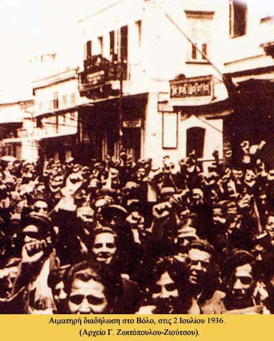

|

Με τη διεθνή οικονομική κρίση του 1929, το λεγόμενο «καπνικό ζήτημα» χτύπησε τις μεγάλες καπνουπόλεις, το Αγρίνιο, το Βόλο, την Καβάλα, τη Θεσσαλονίκη, την Ξάνθη. Ο ανταγωνισμός της παγκόσμιας αγοράς γινόταν όλο και πιο δύσκολο να αντιμετωπισθεί. Η συνεχής αύξηση της παραγωγής με ταυτόχρονη μείωση της ζήτησης είχαν ως αποτέλεσμα να μένουν τα καπνά δυο και τρία χρόνια στοιβαγμένα στις καπναποθήκες. Το απούλητο πλεόνασμα καπνού οδήγησε πολλές μικροεπιχειρήσεις στη χρεοκοπία και αύξησε τον αριθμό των ανέργων καπνεργατών. Για άλλη μια φορά η πολιτεία δεν φάνηκε ικανή να σχεδιάσει μια κεντρική «καπνική» πολιτική, όπως συνέβη και με τη σταφιδική κρίση του 1890.
Συχνές απεργίες με σοβαρές κοινωνικές και πολιτικές συγκρούσεις παρέλυαν την οικονομική ζωή του τόπου. Το αυξανόμενο κύμα απεργιών οδήγησε την τελευταία βενιζελική κυβέρνηση να ψηφίσει το νόμο «περί μέτρων ασφαλείας του κοινωνικού καθεστώτος και προστασίας των ελευθεριών των πολιτών», γνωστό ως «Ιδιώνυμο» (1929), που χαρακτηρίστηκε από πολλά συνδικάτα της εποχής ως αντιεργατικός. Η δεκαετία του 1930 σφραγίστηκε από ισχυρούς εργατικούς αγώνες αλλά και σκληρή κρατική καταστολή του εργατικού κινήματος. Τα καπνεργατικά σωματεία βρέθηκαν στο επίκεντρο των κοινωνικών αναταραχών. Οι καπνεργάτες έβλεπαν την απλουστευμένη επεξεργασία καπνών, λόγω της εισαγωγής της μηχανής στην παραγωγική διαδικασία, και την πτώση των εξαγωγών να τους οδηγεί στην ανεργία. Οι κινητοποιήσεις τους γίνονταν μαχητικότερες και πολλοί φυλακίσθηκαν ή εξορίσθηκαν. Στο Βόλο είχαν χαρακτηριστεί «επικίνδυνη τάξη».
|
|